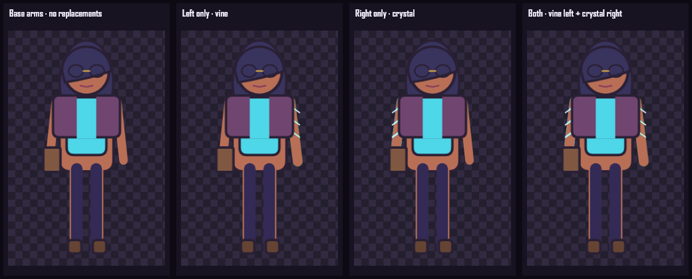
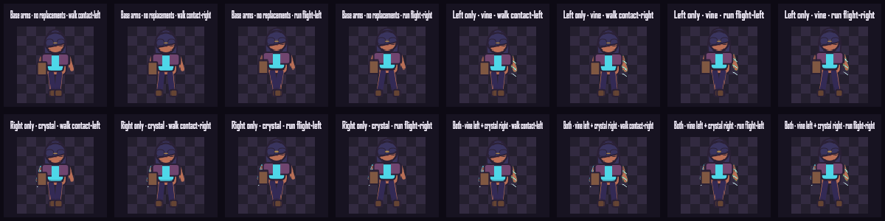

TASK-018 · Bilateral arm modules
Two sides.
Two choices.
Character-left appears on screen-right in the front view. Each base arm is now its own suppressible fragment; crystal and vine replacements exist for both anatomical sides.
Base · left · right · both
Independent replacement and restoration
Unequipping a replacement restores only that side’s base arm. Compare attachment seams and the anatomical labels.

Retained walk and run
Both arms follow every retained frame

Approve Task 018 independently
- Left and Right labels match anatomical sides.
- Base, one-side, and both-side seams look continuous.
- Either replacement can be equipped or removed without changing the other.
- Walk/run strips preserve attachment and motion.